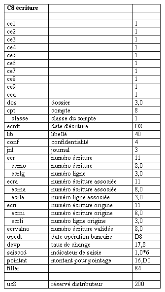

Au niveau des fichiers et des tables, le menu contextuel comporte un choix Export TXT.
Ce choix vous permet d’exporter la description de tables et de fichiers dans un fichier texte. Ce fichier peut ensuite être chargé dans un traitement de textes ou un tableur, la tabulation servant de séparateur entre les différentes zones.
Le fichier est créé dans le même répertoire que le dictionnaire. Le nom du fichier est tout simplement le nom du fichier ou le nom de la table avec l’extension txt.
Exemple
Extrait de la table C8.
